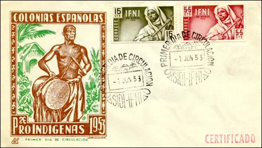
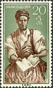
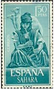
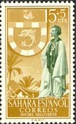
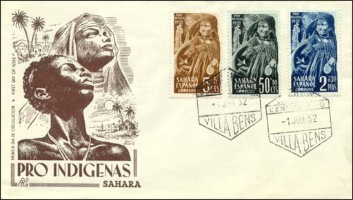

|
PEOPLE OF SPANISH AFRICA
ON POSTAL STAMPS
|
|
This is a site dedicated to a domain of philately that we named the Spanish
Africa. The site started as a natural
extension of the original Spanish North Africa site. This was a site
exclusively dedicated to
philatelic humor, and to some sound criticism of stamp issuing
policies of certain PAs. SNA site was created thanks to the contribution of
many passionate participants in the newsgroup:
news:rec.collecting.stamp.discuss.
Hint: Double click on the menu points found on the left to navigate through the site.
Noting that the Spanish
African philately is rather absent from the philatelic webmastering
scene, we
try to show here the variety of subject presented on colonial and
post-colonial stamps of countries that were possessions of or in the
influence zone of Spain.

Most of
presented stamps were and still are largely availably, at very
affordable prices. They were very popular in the 1960s
and 1970s, so that many generations of topical stamp collectors started
by collecting these stamps too.
|

|
|

|

|
The webmaster and the animator of this site, Victor
Manta, is for many years a topical stamp collector. He lives in
Switzerland. You can find out more about him and about his philatelic
activity by visiting his awarded philatelic sites:
Art on Stamps, Romania as Seen Through its Stamps
or Philatelic Webmasters Association.

We present above a selection of Tangier, Ifni and Spanish Sahara issues, showing
interesting portraits of people living on the mentioned territories. As
much the expressivity of certain faces as the design of
stamps are sometimes
remarkable.
Credits: The Spanish Africa part of this site was created with
the precious help of Tracy Barber
(USA), who sent to the webmaster important quantities of raw scans. Thank you,
Tracy!
|